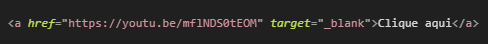
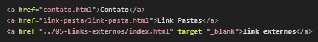

O que são os links ❓
- Links são pontos clicáveis dentro de sites que usamos para ir para outros lugares
- (sejam eles sites externos ou pontos internos dentro do próprio site)
Links externos 🌐

- a ← Quando usado com o atributo href representam um hiperlink
- href=”Adicionar URLS”
- target=”” ← Definir aonde o link var ser aberto
- “_blank“ ← Abre o link em uma nova aba
Links internos 📂

- href=”Nome-do-arquivo.html” ← Para abrir um arquivo na mesma pasta
- ”Nome-da-pasta/” ← Entra em uma pasta dentro da pasta já aberta
- ”../” ← voltar uma pasta
Retornar